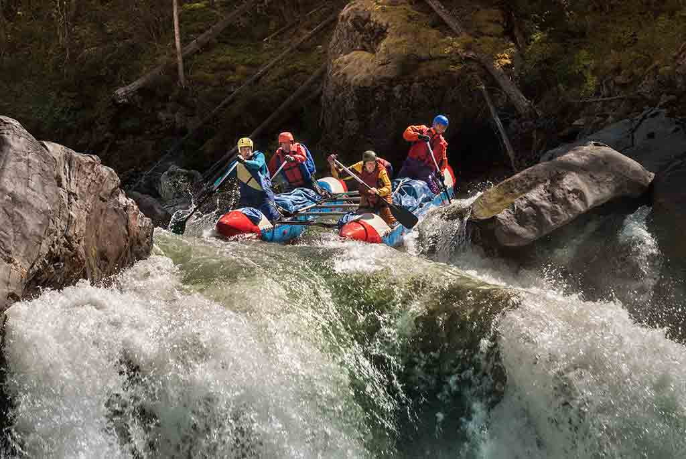

Join us for unforgettable adventures! Oars Up! 😎
Founded in 1995 by a group of thrill-seeking adventurers, **Kimraphy White Water Rafting** began with just a handful of rafts and a passion for the wild. What started as a small operation on the banks of a remote river has grown into one of the most trusted names in whitewater rafting. Over the years, we've navigated the roaring rapids of Ghana’s Volta River, explored hidden gorges, and welcomed thousands of explorers—from families to solo adventurers—into the heartbeat of nature.
